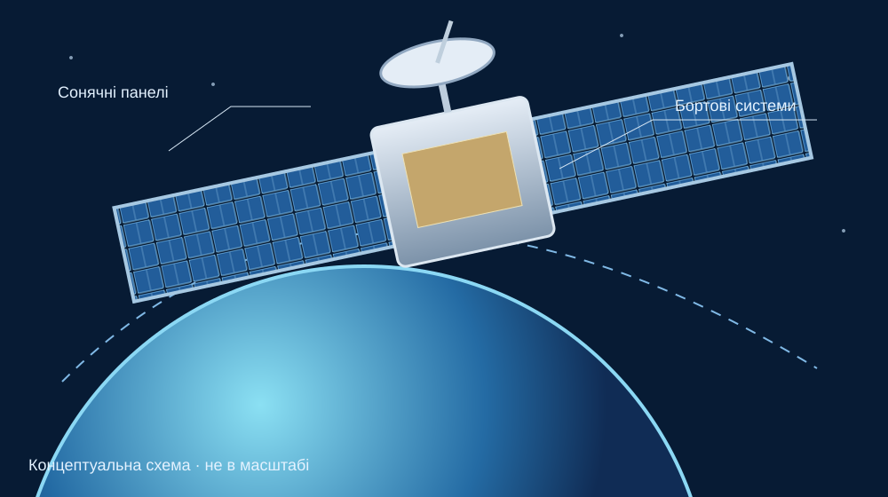

Врятувати космічну місію
Відновіть зв'язок із супутником, не вичерпавши його запас енергії.

Сигнал тривоги
Навчальний супутник на круговій орбіті висотою 500 км втрачає заряд. Потрібно передати один пакет наукових даних, зберегти резерв 20 Вт·год і не виконати неперевірені команди. Усі дані синтетичні.
Коротка теорія
Період кругової орбіти T = 2π√(r³/μ), де r = R + h, R = 6371 км, μ = 398600 км³/с². За відсутності атмосферного опору це кеплерівська модель.
Енергетичний баланс: E₂ = E₁ + (Pген − Pспож)Δt. HMAC-SHA-256 перевіряє цілісність та автентичність повідомлення за спільним секретним ключем. Сам хеш без ключа цього не гарантує.
1. Орбіта і тінь
Порівняйте висоти 300, 500 і 1000 км. Для кругової орбіти за нульового кута між напрямком на Сонце та площиною орбіти тривалість тіні наближено дорівнює T·arcsin(R/r)/π. Знайдіть найбільшу тривалість тіні серед трьох варіантів.
| Висота, км | Період, хв | Тінь, хв |
|---|
2. Телеметрія під лупою
У кожному інтервалі 10 хв супутник перебуває в тіні; сонячна генерація нульова. За показами потужності та заряду знайдіть інтервал, який не узгоджується з моделлю. Врахуйте, що точність вимірювання енергії ±0,2 Вт·год.
| Інтервал | Потужність, Вт | Енергія на початку → в кінці, Вт·год |
|---|
3. Команда з Землі
Перевірте три пакети: справжній, змінений після підписання та повторно переданий старий пакет. HMAC працює зі справжнім Web Crypto API. Номер останньої прийнятої команди — 41. Навчальний ключ міститься в коді, а в реальній системі він має бути секретним.
4. Центр керування місією
Початковий заряд 42 Вт·год, місткість 80 Вт·год. Кожен крок — 10 хв. Перші чотири кроки в тіні, наступні чотири — на Сонці (генерація 45 Вт). Базове споживання 24 Вт, обігрів 12 Вт (необхідний у тіні), передавач 36 Вт додатково. Передати пакет можна одним кроком тільки на Сонці (умовне вікно зв’язку). Перед кожним кроком оберіть режими. Збережіть резерв не менше 20 Вт·год у будь-який момент.
| Крок | Генерація, Вт | Споживання, Вт | Заряд, Вт·год | Подія |
|---|
5. Наука навколо Вас
Виберіть побутовий пристрій з акумулятором. За паспортними даними оцініть енергію у Вт·год (якщо відомі А·год та номінальна напруга, перемножте їх). Порівняйте прогноз часу роботи за двох навантажень. Не розбирайте пристрій і не проводьте електричних підключень.
Наукова цікавинка
Радіосигнал від апарата на відстані 500 км у зеніті долає цю відстань приблизно за 1,67 мс. Затримка реального зв'язку також залежить від геометрії, обробки сигналів та протоколів.
Модель не враховує теплову інерцію, старіння батареї, орієнтацію панелей, реальні вікна зв’язку і динаміку орбіти.
Ваш експертний висновок
Ваше майбутнє у ФТІ
Моделювання динамічних систем, обробка сигналів, захист телеметрії та криптографічні протоколи — напрями роботи дослідників і розробників.
ФТІ КПІ · ФТІ школаДжерела для поглиблення
NASA — Basics of Space Flight · RFC 2104 — HMAC · Web Crypto API